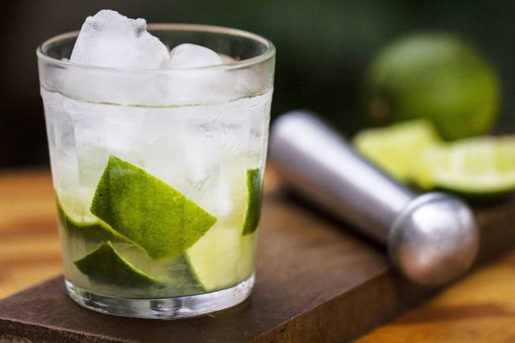

Caipirinha
Igredients
- 1/2 lime
- 1/2 to 2 teaspoons sugar (to taste)
- 2 ounces cachaça
- Ice
Preparation
- Gather the ingredients.
- Cut half of a lime into small wedges.
- Place the lime and sugar into an old-fashioned glass and muddle well.
- GAdd a few ice cubes
- Top the drink with cachaça
- ENJOY!